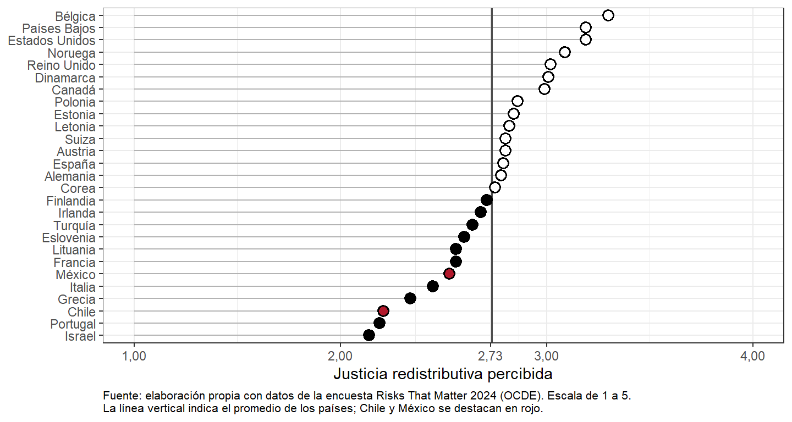
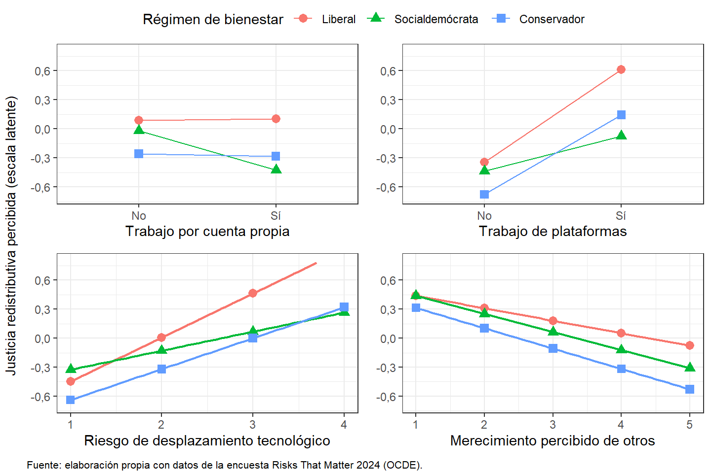

![]()
Modelo 1 | Modelo 2 | Modelo 3 | Modelo 4 | Modelo 5 | Modelo 6 | Modelo 7 | Modelo 8 | |
|---|---|---|---|---|---|---|---|---|
Trabajo por cuenta propia (ref.: no) | -0,059 | -0,056 | -0,055 | -0,066 | -0,067 | -0,064 | -0,064 | -0,063 |
(0,038) | (0,038) | (0,039) | (0,039) | (0,039) | (0,039) | (0,039) | (0,039) | |
Trabajo de plataformas (ref.: no) | 1,177 *** | 1,193 *** | 0,838 *** | 0,854 *** | 0,788 *** | 0,788 *** | 0,788 *** | 0,787 *** |
(0,049) | (0,049) | (0,050) | (0,050) | (0,051) | (0,051) | (0,051) | (0,051) | |
Preocupación por perder empleo o ingresos | -0,058 *** | -0,180 *** | -0,175 *** | -0,164 *** | -0,163 *** | -0,163 *** | -0,163 *** | |
(0,014) | (0,015) | (0,015) | (0,015) | (0,015) | (0,015) | (0,015) | ||
Riesgo de desplazamiento tecnológico | 0,372 *** | 0,366 *** | 0,347 *** | 0,348 *** | 0,348 *** | 0,348 *** | ||
(0,020) | (0,020) | (0,020) | (0,020) | (0,020) | (0,020) | |||
Beneficio tecnológico percibido | 0,463 *** | 0,465 *** | 0,438 *** | 0,438 *** | 0,438 *** | 0,439 *** | ||
(0,021) | (0,021) | (0,021) | (0,021) | (0,021) | (0,021) | |||
Merecimiento percibido de otros | -0,183 *** | -0,179 *** | -0,179 *** | -0,179 *** | -0,178 *** | |||
(0,014) | (0,014) | (0,014) | (0,014) | (0,014) | ||||
Coeficiente de Gini (estandarizado) | -0,135 | -0,095 | -0,086 | |||||
(0,087) | (0,101) | (0,097) | ||||||
PIB per cápita (estandarizado) | 0,217 * | 0,206 * | 0,191 * | |||||
(0,087) | (0,090) | (0,084) | ||||||
Tasa de desempleo (estandarizada) | -0,032 | -0,047 | ||||||
(0,081) | (0,075) | |||||||
Gasto social (estandarizado) | 0,071 | 0,150 | ||||||
(0,093) | (0,093) | |||||||
Régimen de bienestar (ref.: liberal) | ||||||||
Socialdemócrata | -0,154 | |||||||
(0,246) | ||||||||
Conservador | -0,350 * | |||||||
(0,165) | ||||||||
BIC | 51.477,6 | 51.470,6 | 50.025,8 | 49.857,2 | 49.766,8 | 49.772,5 | 49.791,4 | 49.806,5 |
N (suma de ponderadores) | 17.296 | 17.296 | 17.296 | 17.296 | 17.296 | 17.296 | 17.296 | 17.296 |
Países | 27 | 27 | 27 | 27 | 27 | 27 | 27 | 27 |
Varianza del intercepto (país) | 0,238 | 0,229 | 0,246 | 0,229 | 0,227 | 0,135 | 0,132 | 0,111 |
Nota: coeficientes de regresión (log-odds acumulados) con errores estándar entre paréntesis. * p < 0,05; ** p < 0,01; *** p < 0,001. Los modelos 5 a 8 controlan por sexo, edad, educación e ingreso; sexo, edad e ingreso muestran efectos significativos, la educación no. | ||||||||
¿Una parte justa? Posición en el mercado laboral, riesgo tecnológico percibido y justicia redistributiva según régimen de bienestar en 27 países de la OCDE
Varios países latinoamericanos aprobaron recientemente leyes para incorporar a los trabajadores de plataformas digitales a la seguridad social, mientras la automatización y la intermediación digital debilitan el vínculo entre empleo y protección social. Este trabajo examina la justicia redistributiva percibida, entendida como la sensación de recibir una parte justa de los beneficios públicos dados los impuestos y contribuciones pagados. Con datos de la encuesta Risks That Matter 2024 de la OCDE (19.669 trabajadores de 27 países, entre ellos Chile y México), se estiman modelos de regresión ordinal multinivel para hipótesis preregistradas. La inseguridad laboral y la creencia de que otros reciben beneficios inmerecidos reducen la justicia percibida, y ver la tecnología como una mejora de las condiciones de trabajo la aumenta. En contra de lo esperado, los trabajadores de plataformas y quienes anticipan desplazamiento tecnológico reportan mayor justicia percibida, sobre todo en el régimen liberal, donde se ubican Chile y México. Los resultados se discuten a la luz de la extensión de la protección social a estos trabajadores en América Latina. Palabras clave: justicia redistributiva, trabajo de plataformas, cambio tecnológico, regímenes de bienestar, América Latina
Contacto: Kevin Carrasco, Núcleo Milenio sobre Evolución del Trabajo (M-NEW) kevincq625@gmail.com. Ponencia para el IX Seminario Internacional Desigualdad y Movilidad Social en América Latina (DEMOSAL), Montevideo, 1 al 3 de marzo de 2027.
1 Introducción
Entre 2022 y 2025, varios países de América Latina legislaron sobre el trabajo mediado por plataformas digitales y su acceso a la seguridad social. La Ley 21.431 de Chile reconoce a estos trabajadores como dependientes o independientes y extiende a estos últimos la cobertura de seguridad social (Ley 21.431, 2022). La reforma mexicana de 2024 incorporó el trabajo en plataformas a la Ley Federal del Trabajo y consideró subordinados, con afiliación al Instituto Mexicano del Seguro Social, a quienes obtienen al menos un salario mínimo mensual neto (Diario Oficial de la Federación, 2024). Uruguay fijó en 2025 niveles mínimos de protección para repartidores y conductores, con seguro de accidentes de trabajo para los independientes (Ley 20.396, 2025), y la reforma laboral colombiana del mismo año dispuso que las plataformas de reparto financien el 60% de las cotizaciones de salud y pensión de los repartidores independientes (Ley 2466, 2025). En Brasil, el Ejecutivo presentó en 2024 un proyecto que propone la figura del trabajador autónomo por plataforma, con cotizaciones previsionales compartidas entre conductores y empresas (Câmara dos Deputados, 2024), y en junio de 2026 la Conferencia Internacional del Trabajo adoptó un convenio sobre el trabajo decente en la economía de plataformas (OIT, 2026). Estas iniciativas comparten el diagnóstico que en Europa motivó la Recomendación del Consejo de 2019 y la directiva de 2024 sobre trabajo en plataformas (Council of the European Union, 2019; European Parliament and Council of the European Union, 2024). Los sistemas de protección social se organizaron en torno al empleo asalariado estable, y quienes trabajan fuera de ese modelo mantienen con ellos un vínculo débil.
El diagnóstico tiene un peso particular en la región. La seguridad social latinoamericana se construyó de manera estratificada, protegiendo primero a los grupos ocupacionales con mayor capacidad de presión (Mesa-Lago, 1978), y en varios países alcanza sobre todo a quienes tienen empleo formal (Filgueira, 2005). Con cerca de la mitad de los ocupados en la informalidad (ILO, 2025), la relación entre lo que se aporta y lo que se recibe del Estado es fragmentaria para buena parte de los trabajadores, y las reformas de las últimas décadas acercaron a la región a un régimen liberal-informal, con mercados laborales desregulados y expansión de la asistencia no contributiva (Barrientos, 2009). El trabajo de plataformas se superpone con formas previas de trabajo por cuenta propia e informalidad (Gutiérrez Crocco y Atzeni, 2022), y las nuevas leyes buscan incorporar a estos trabajadores a un intercambio contributivo del que han estado en gran medida al margen.
La investigación sobre actitudes hacia el Estado de bienestar ha mostrado que la exposición al riesgo laboral y a la automatización aumenta la demanda de protección social (Busemeyer y Sahm, 2022; Rehm, 2009), y en América Latina se ha documentado que la vulnerabilidad en el empleo moldea las preferencias por protección social (Carnes y Mares, 2015). Mucha menos atención ha recibido la justicia redistributiva percibida, es decir, el juicio sobre si los beneficios que una persona recibe del Estado compensan de manera justa los impuestos y contribuciones que paga (Roosma et al., 2016). Esa evaluación es central para las regulaciones recientes, porque incorporar a los trabajadores de plataformas a la seguridad social supone pedirles contribuciones a cambio de beneficios, y la legitimidad de ese intercambio depende de cómo lo juzguen.
Este trabajo examina si la justicia redistributiva percibida se relaciona con la posición en el mercado laboral y con la percepción del riesgo tecnológico, y si los regímenes de bienestar condicionan esas relaciones. Para ello utiliza la ola 2024 de la encuesta Risks That Matter de la OCDE, que incluye a Chile y México entre sus 27 países y permite compararlos de manera sistemática con otros Estados de bienestar. El estudio distingue entre empleo formal dependiente, trabajo por cuenta propia y trabajo de plataformas; separa en la percepción del cambio tecnológico una dimensión amenazante, la probabilidad de ser desplazado, y una habilitante, la probabilidad de que la tecnología mejore las condiciones de trabajo; e incorpora el juicio sobre el merecimiento de otros beneficiarios como predictor de la evaluación del propio intercambio (Van Oorschot, 2006). El argumento que organiza el trabajo sostiene que la justicia percibida del intercambio fiscal se ancla en la experiencia cotidiana del trabajo: el vínculo con el sistema de protección, la seguridad en el empleo, la forma de anticipar el cambio tecnológico y el juicio sobre quienes también reciben del Estado.
1.1 La justicia redistributiva como reciprocidad
La investigación sobre actitudes hacia la desigualdad distingue entre preferencias, creencias normativas sobre cómo deberían distribuirse los recursos, y percepciones, juicios sobre cómo funciona efectivamente el sistema (Castillo et al., 2022; McCall, 2013). La justicia redistributiva percibida pertenece al segundo grupo y evalúa si es justo el intercambio entre impuestos y contribuciones, por un lado, y servicios y transferencias, por otro. Su fundamento es la lógica de la reciprocidad, según la cual la legitimidad del sistema descansa también en la justicia percibida de las instituciones que asignan contribuciones y beneficios (Mau, 2014; Rothstein, 1998). Cuando las personas sienten que sus aportes tienen un retorno adecuado se sostiene la confianza institucional, y cuando perciben aportes desproporcionados, beneficios insuficientes o un sistema que favorece a algunos, la legitimidad se erosiona (Cavaillé, 2025). Este juicio se distingue de las preferencias por redistribución porque evalúa el trato que el sistema da a cada persona según lo que aporta, y su estudio complementa la literatura sobre percepciones de desigualdad y meritocracia (Castillo et al., 2025; Mijs, 2021).
Estas percepciones varían de manera sistemática entre países (Blekesaune, 2003). La figura 1 muestra el promedio de justicia redistributiva percibida en los 27 países. Chile se ubica entre los tres con valores más bajos y México también queda bajo el promedio, en una distribución que no sigue de manera simple la tipología de regímenes de bienestar.

1.2 Posición laboral, inseguridad y trabajo de plataformas
La sociología del trabajo ha documentado la polarización entre el empleo formal y un estrato creciente de trabajo precario, que traslada riesgos desde los empleadores hacia los trabajadores (Kalleberg, 2011; Standing, 2014). Como las instituciones de bienestar se diseñaron en torno a la relación laboral estándar, quienes se apartan de ella mantienen un vínculo más débil y desigual con la protección social (Emmenegger et al., 2012; Schwander y Häusermann, 2013), y esa posición condiciona también sus actitudes hacia la desigualdad (Lindh y McCall, 2020; Pérez-Ahumada et al., 2026). Los asalariados formales cotizan de manera registrada y acumulan derechos reconocibles, por lo que la relación entre lo que aportan y lo que reciben es trazable. Los trabajadores por cuenta propia enfrentan una relación más opaca y a menudo menos favorable (Marx, 2014; Rueda, 2007). En América Latina, esta distancia entre insiders y outsiders se superpone con la informalidad y con una expansión de la política social que dejó los seguros contributivos concentrados en los asalariados formales (Holland y Schneider, 2017).
El trabajo de plataformas es una forma especialmente aguda de empleo no estándar. La intermediación algorítmica, la clasificación como contratistas independientes y la fragmentación de las tareas sitúan a estos trabajadores en gran medida fuera de los seguros sociales (Behrendt et al., 2019; Vallas y Schor, 2020). La evidencia sobre repartidores en Argentina y Chile muestra que esa clasificación les traslada riesgos y los deja fuera de la seguridad social (Gutiérrez Crocco y Atzeni, 2022). Esta posición permite esperar una evaluación más negativa de su intercambio con el Estado.
La inseguridad laboral, entendida como la preocupación por perder el empleo o los ingresos en el corto plazo (De Witte, 2005), es una dimensión de vulnerabilidad distinta del tipo de empleo, que también afecta a trabajadores formalmente protegidos (Anderson y Pontusson, 2007). La exposición a la inseguridad aumenta el apoyo a la protección social (Iversen y Soskice, 2001), pero su relación con la justicia percibida puede ir en otra dirección. Quien anticipa perder su trabajo examina con más detalle lo que recibiría del Estado y, si no confía en su capacidad protectora, tenderá a juzgar el intercambio como menos justo (Marx, 2014).
1.3 Percepción del cambio tecnológico
Las estimaciones sobre la proporción de empleos automatizables varían ampliamente, pero incluso las más conservadoras anticipan cambios importantes en el contenido de las tareas (Arntz et al., 2016; Frey y Osborne, 2017), con riesgos que en América Latina se distribuyen de manera desigual entre grupos (Bustelo et al., 2020), lo que convierte a la exposición tecnológica en una dimensión de la desigualdad laboral. Para las actitudes hacia el bienestar importa también cómo anticipan los trabajadores esos efectos en su propio empleo (Gallego y Kurer, 2022), y esa anticipación tiene dos caras.
La primera es el riesgo de desplazamiento, es decir, la probabilidad de que el propio empleo sea reemplazado por un robot, por una herramienta de inteligencia artificial o por alguien que ofrece un servicio similar en una plataforma, o de perderlo por falta de habilidades digitales. La exposición percibida al riesgo tecnológico aumenta la demanda de protección social (Busemeyer y Sahm, 2022; Thewissen y Rueda, 2019). Según esa lógica, quienes se sienten amenazados tendrían mayores expectativas de protección y, al contrastarlas con lo que reciben, juzgarían su intercambio como insuficiente.
La segunda cara es el beneficio tecnológico, la probabilidad de que la tecnología haga la jornada más compatible con la vida privada, reduzca la peligrosidad o exigencia física del trabajo o disminuya su monotonía y carga mental. Esta dimensión habilitante ha recibido menos atención (Brougham y Haar, 2018). Percibir la tecnología como una mejora implica menor exposición al riesgo y más optimismo sobre la trayectoria laboral, y en la medida en que la evaluación del intercambio refleja la seguridad económica de cada persona (Rehm, 2009), cabe esperar una asociación positiva.
1.4 Merecimiento percibido de otros
Las percepciones de justicia dependen además de los marcos normativos con que las personas juzgan quién merece recibir del Estado. La solidaridad se dirige a los grupos considerados merecedores según criterios de control sobre la propia situación, actitud, reciprocidad, identidad y necesidad (Petersen, 2012; Van Oorschot, 2000), y en contextos muy mercantilizados las creencias meritocráticas refuerzan la tendencia a considerar inmerecidos a quienes parecen no aportar lo suficiente (Castillo et al., 2025). El juicio sobre el merecimiento de otros es analíticamente distinto del juicio sobre el propio intercambio, aunque ambos forman parte de una misma economía moral del bienestar (Mau, 2014; Van Oorschot et al., 2017). Si los recursos que una persona aporta parecen sostener a quienes no cumplen su parte, se erosiona la sensación de que el sistema la trata con justicia (Reeskens y Van Oorschot, 2013).
1.5 Regímenes de bienestar y el lugar de América Latina
Las percepciones individuales se forman en contextos institucionales que varían entre regímenes de bienestar (Arts y Gelissen, 2002; Esping-Andersen, 1990). En los regímenes socialdemócratas la protección es amplia y universal (Korpi y Palme, 1998), en los liberales es residual y se organiza en torno a la participación en el mercado, y en los conservador-corporativistas los derechos dependen del estatus laboral (Ferrera, 1996). Los regímenes latinoamericanos combinan rasgos de estos tipos con una informalidad extendida, y las tipologías regionales distinguen entre Chile, con una política social focalizada y orientada al mercado, y México, un régimen dual en el que la seguridad social alcanza sobre todo a los trabajadores formales (Filgueira, 2005; Martínez Franzoni, 2008). En estos Estados de bienestar truncados, quienes quedan fuera de la protección contributiva esperan poco del Estado (Holland, 2018).
El nivel de desarrollo económico condiciona también la capacidad fiscal del Estado y las expectativas ciudadanas (Blekesaune, 2003), y la desigualdad de ingresos se asocia con las percepciones sobre el sistema, aunque la dirección de esa relación se discute (Finseraas, 2009; Schmidt-Catran, 2016). En conjunto, se espera que la justicia percibida sea mayor donde la protección es más universal (Jæger, 2006; Larsen, 2008).
El contexto institucional puede además moderar el efecto de los predictores individuales. La distancia entre el empleo no estándar y la protección social es mayor en los regímenes liberales y conservadores (Schwander y Häusermann, 2013); en los universalistas, la protección frente a los riesgos de la digitalización depende menos de la trayectoria laboral (Busemeyer y Sahm, 2022; Fan et al., 2024); y donde los beneficios se conciben como derechos generales, las distinciones entre merecedores y no merecedores pierden fuerza (Van Oorschot et al., 2017).
2 Datos, variables y métodos
2.1 Datos
Se utilizan datos de la ola 2024 de la encuesta Risks That Matter (RTM) de la OCDE (OECD, 2024), aplicada en línea a 27.229 personas de 18 a 64 años en 27 países miembros, entre ellos Chile y México, los únicos casos latinoamericanos de la encuesta. Los datos se ponderan con factores de posestratificación calibrados por edad, sexo, región y nivel educativo (Thomas et al., 2025). El análisis se restringe a quienes estaban trabajando o temporalmente ausentes de un empleo remunerado (n = 22.063), porque las preguntas sobre tipo de empleo, trabajo de plataformas y cambio tecnológico se refieren al propio empleo y solo se aplican a ese grupo. Tras eliminar los casos con valores perdidos, la muestra analítica comprende 19.669 personas (89,1% de la muestra elegible), 657 de ellas en Chile y 645 en México (tabla 5).
2.2 Variables
La variable dependiente es el grado de acuerdo con la afirmación «Siento que recibo una parte justa de los beneficios públicos, dados los impuestos y contribuciones sociales que pago o he pagado en el pasado», en una escala de cinco puntos tratada como ordinal.
La posición laboral se mide con dos indicadores binarios no excluyentes, trabajo por cuenta propia y trabajo mediado por plataformas digitales. Quienes obtienen cero en ambos corresponden al empleo formal dependiente, la categoría de referencia. La inseguridad laboral corresponde a la preocupación por perder el empleo o los ingresos por cuenta propia en el próximo año o dos, en cuatro categorías. La percepción del cambio tecnológico se basa en siete ítems sobre la probabilidad de que ciertos eventos ocurran en el propio empleo en los próximos cinco años, en una escala de cuatro puntos. Un análisis factorial exploratorio (tabla 4) respalda dos escalas: riesgo de desplazamiento tecnológico (reemplazo por un robot o por una persona que ofrece un servicio similar en una plataforma, y pérdida del empleo por falta de habilidades tecnológicas; α = 0,83) y beneficio tecnológico percibido (jornada más compatible con la vida privada, trabajo menos peligroso o exigente y trabajo menos aburrido o estresante; α = 0,78). El ítem sobre reemplazo por inteligencia artificial forma una tercera dimensión y se excluye de las escalas.1 El merecimiento percibido de otros se mide con el acuerdo con la afirmación «Muchas personas reciben beneficios públicos sin merecerlo», en cinco puntos.
El régimen de bienestar distingue los tipos socialdemócrata, liberal y conservador-corporativista (Bambra, 2007; Esping-Andersen, 1990). El sur y el centro-este de Europa se asignan al régimen conservador (Fenger, 2006; Ferrera, 1996), al igual que Israel, Corea y Turquía, y los países bálticos al liberal (Aidukaite, 2011). Chile y México se asignan al régimen liberal por el peso del mercado y de la informalidad en su provisión de bienestar (Barrientos, 2009; Martínez Franzoni, 2008), una aproximación que se discute más adelante. En el nivel país se incluyen el coeficiente de Gini, el PIB per cápita en paridad de poder adquisitivo (en logaritmo) y la tasa de desempleo, de los Indicadores del Desarrollo Mundial del Banco Mundial, y el gasto social público como porcentaje del PIB, de la base SOCX de la OCDE. Para cada país se usa el valor más reciente del período 2015-2024, y los cuatro indicadores se estandarizan. Todos los modelos controlan por sexo, edad, nivel educativo y decil de ingreso. Los estadísticos descriptivos se presentan en la tabla 1.
| Etiqueta | Estadísticas / Valores | Frec. (% sobre válidos) | Válido |
|---|---|---|---|
| Justicia redistributiva | 1. Muy en desacuerdo 2. En desacuerdo 3. Ni acuerdo ni desacuerdo 4. De acuerdo 5. Muy de acuerdo |
3.600 (18,3%) 4.765 (24,2%) 5.641 (28,7%) 4.255 (21,6%) 1.408 ( 7,2%) |
19.669 (100,0%) |
| Sexo | 1. Hombre 2. Mujer |
10.520 (53,5%) 9.149 (46,5%) |
19.669 (100,0%) |
| Tramo de edad | 1. 18-24 2. 25-34 3. 35-44 4. 45-54 5. 55-64 |
2.136 (10,9%) 4.626 (23,5%) 4.854 (24,7%) 4.599 (23,4%) 3.454 (17,6%) |
19.669 (100,0%) |
| Nivel educativo | 1. Bajo 2. Medio 3. Alto |
1.546 ( 7,9%) 8.147 (41,4%) 9.976 (50,7%) |
19.669 (100,0%) |
| Decil de ingreso | Media (d-s) : 4,9 (2,9) min < mediana < max: 1 < 5 < 10 RI (CV) : 5 (0,6) |
1 : 3.398 (17,3%) 2 : 1.844 ( 9,4%) 3 : 1.788 ( 9,1%) 4 : 2.652 (13,5%) 5 : 2.322 (11,8%) 6 : 1.815 ( 9,2%) 7 : 1.488 ( 7,6%) 8 : 1.424 ( 7,2%) 9 : 1.300 ( 6,6%) 10 : 1.638 ( 8,3%) |
19.669 (100,0%) |
| Trabajo por cuenta propia | 1. No 2. Sí |
16.887 (85,9%) 2.782 (14,1%) |
19.669 (100,0%) |
| Trabajo de plataformas | 1. No 2. Sí |
17.825 (90,6%) 1.844 ( 9,4%) |
19.669 (100,0%) |
| Perder el empleo | 1. Nada preocupado 2. No tan preocupado 3. Algo preocupado 4. Muy preocupado |
2.927 (14,9%) 5.453 (27,7%) 6.110 (31,1%) 5.179 (26,3%) |
19.669 (100,0%) |
| Riesgo de desplazamiento tecnológico | Media (d-s) : 2,1 (0,9) min < mediana < max: 1 < 2 < 4 RI (CV) : 1,3 (0,4) |
13 valores distintos | 19.669 (100,0%) |
| Beneficio tecnológico percibido | Media (d-s) : 2,6 (0,8) min < mediana < max: 1 < 2,7 < 4 RI (CV) : 1 (0,3) |
13 valores distintos | 19.669 (100,0%) |
| Merecimiento de otros | 1. Muy en desacuerdo 2. En desacuerdo 3. Ni acuerdo ni desacuerdo 4. De acuerdo 5. Muy de acuerdo |
624 ( 3,2%) 1.727 ( 8,8%) 4.434 (22,5%) 6.670 (33,9%) 6.214 (31,6%) |
19.669 (100,0%) |
| Régimen de bienestar | 1. Liberal 2. Socialdemócrata 3. Conservador |
6.563 (33,4%) 2.957 (15,0%) 10.149 (51,6%) |
19.669 (100,0%) |
| Coeficiente de Gini (ingreso disponible) | Media (d-s) : 32,8 (5) min < mediana < max: 24,7 < 32,4 < 43,7 RI (CV) : 5 (0,2) |
26 valores distintos | 19.669 (100,0%) |
| PIB per cápita (PPA) | Media (d-s) : 57.093,7 (20.396,3) min < mediana < max: 21.970,4 < 53.412,1 < 118.833,3 RI (CV) : 18.634,9 (0,4) |
27 valores distintos | 19.669 (100,0%) |
| Tasa de desempleo (%) | Media (d-s) : 5,7 (2,3) min < mediana < max: 2,7 < 5,2 < 11,4 RI (CV) : 3,2 (0,4) |
25 valores distintos | 19.669 (100,0%) |
| Gasto social (% del PIB) | Media (d-s) : 21,5 (6) min < mediana < max: 10 < 23 < 31,6 RI (CV) : 10,1 (0,3) |
27 valores distintos | 19.669 (100,0%) |
2.3 Estrategia de análisis
Las hipótesis fueron preregistradas en Open Science Framework (Carrasco, 2026). Se estiman modelos de regresión logística ordinal multinivel, con individuos anidados en países e interceptos aleatorios por país (Snijders y Bosker, 2012), mediante la función clmm del paquete ordinal de R (Christensen, 2018). Tras un modelo nulo, los predictores se incorporan por bloques: tipo de empleo (modelo 1), inseguridad laboral (2), percepciones tecnológicas (3), merecimiento de otros (4), controles sociodemográficos (5), indicadores macroeconómicos (6 y 7) y régimen de bienestar (8). El modelo 9 añade la interacción entre trabajo por cuenta propia y trabajo de plataformas, y los modelos 10 a 14 incorporan interacciones entre el régimen y cada predictor individual. Todos los análisis usan los ponderadores de la OCDE, que clmm trata como ponderadores de frecuencia, por lo que el número de observaciones informado en las tablas corresponde a la suma de los pesos (17.296). El código del análisis está disponible en un repositorio público.2
3 Resultados
3.1 Modelos de efectos principales
La correlación intraclase del modelo nulo ubica el 6,8% de la varianza de la justicia redistributiva percibida en el nivel país. La tabla 2 presenta los modelos de efectos principales. Sus coeficientes son log-odds acumulados, de modo que un valor positivo indica mayores chances de reportar una categoría más alta de justicia percibida. Entre el primer y el último modelo, la varianza entre países baja de 0,238 a 0,111, con la mayor caída al incorporar los indicadores macroeconómicos (de 0,227 a 0,135 en el modelo 6).
El trabajo de plataformas es el predictor más fuerte y estable. Su coeficiente es 1,177 en el modelo 1 y disminuye al incorporar las percepciones tecnológicas y el merecimiento, aunque se mantiene alto en el modelo 8 (0,787; p < 0,001). Los trabajadores de plataformas tienen así alrededor del doble de chances de reportar mayor justicia percibida que los asalariados formales (OR ≈ 2,2). El trabajo por cuenta propia no es significativo en ningún modelo (≈ −0,06). La preocupación por perder el empleo o los ingresos es negativa y se fortalece al controlar por las percepciones tecnológicas, desde −0,058 en el modelo 2 hasta −0,163 en el modelo 8 (p < 0,001).
Las percepciones tecnológicas son positivas desde el modelo 3. El beneficio tecnológico percibido tiene el mayor efecto entre los predictores individuales (≈ 0,44 a 0,47; p < 0,001), seguido por el riesgo de desplazamiento (≈ 0,35 a 0,37; p < 0,001), cuyo signo es contrario al hipotetizado. El merecimiento percibido de otros es negativo y estable (≈ −0,18; p < 0,001), y la inclusión de los controles en el modelo 5 deja prácticamente intacta esta estructura.
En el nivel país, el PIB per cápita es el único indicador macroeconómico con una asociación significativa, con mayor justicia percibida en los países más ricos (0,217 en el modelo 6 y 0,191 en el modelo 8; p < 0,05). El coeficiente de Gini, el desempleo y el gasto social no son significativos. Controlando por estos indicadores, el régimen de bienestar muestra un único contraste significativo: la justicia percibida es menor en el régimen conservador que en el liberal (−0,350; p < 0,05), mientras que el contraste socialdemócrata no es significativo (−0,154).
3.2 Interacciones con el régimen de bienestar
Modelo 9 | Modelo 10 | Modelo 11 | Modelo 12 | Modelo 13 | Modelo 14 | |
|---|---|---|---|---|---|---|
Trabajo por cuenta propia (ref.: no) | -0,018 | 0,013 | -0,065 | -0,062 | -0,064 | -0,065 |
(0,041) | (0,068) | (0,039) | (0,039) | (0,039) | (0,039) | |
Trabajo de plataformas (ref.: no) | 0,873 *** | 0,788 *** | 0,957 *** | 0,783 *** | 0,786 *** | 0,786 *** |
(0,057) | (0,051) | (0,078) | (0,051) | (0,051) | (0,051) | |
Preocupación por perder empleo o ingresos | -0,164 *** | -0,163 *** | -0,163 *** | -0,096 *** | -0,162 *** | -0,163 *** |
(0,015) | (0,015) | (0,015) | (0,025) | (0,015) | (0,015) | |
Riesgo de desplazamiento tecnológico | 0,349 *** | 0,350 *** | 0,349 *** | 0,349 *** | 0,455 *** | 0,346 *** |
(0,020) | (0,020) | (0,020) | (0,020) | (0,030) | (0,020) | |
Merecimiento percibido de otros | -0,178 *** | -0,179 *** | -0,179 *** | -0,178 *** | -0,180 *** | -0,129 *** |
(0,014) | (0,014) | (0,014) | (0,014) | (0,014) | (0,023) | |
Socialdemócrata | -0,157 | -0,108 | -0,092 | 0,012 | 0,381 | 0,057 |
(0,246) | (0,247) | (0,245) | (0,268) | (0,266) | (0,287) | |
Conservador | -0,353 * | -0,345 * | -0,334 * | -0,034 | -0,054 | -0,044 |
(0,165) | (0,166) | (0,165) | (0,186) | (0,184) | (0,200) | |
Cuenta propia × plataformas | -0,368 ** | |||||
(0,115) | ||||||
Cuenta propia × socialdemócrata | -0,418 *** | |||||
(0,126) | ||||||
Cuenta propia × conservador | -0,039 | |||||
(0,086) | ||||||
Plataformas × socialdemócrata | -0,596 *** | |||||
(0,134) | ||||||
Plataformas × conservador | -0,136 | |||||
(0,108) | ||||||
Inseguridad laboral × socialdemócrata | -0,060 | |||||
(0,044) | ||||||
Inseguridad laboral × conservador | -0,115 *** | |||||
(0,032) | ||||||
Desplazamiento × socialdemócrata | -0,258 *** | |||||
(0,050) | ||||||
Desplazamiento × conservador | -0,136 *** | |||||
(0,038) | ||||||
Merecimiento × socialdemócrata | -0,058 | |||||
(0,041) | ||||||
Merecimiento × conservador | -0,081 ** | |||||
(0,030) | ||||||
BIC | 49.806,0 | 49.813,9 | 49.806,0 | 49.812,8 | 49.797,3 | 49.818,8 |
N (suma de ponderadores) | 17.296 | 17.296 | 17.296 | 17.296 | 17.296 | 17.296 |
Países | 27 | 27 | 27 | 27 | 27 | 27 |
Varianza del intercepto (país) | 0,110 | 0,111 | 0,110 | 0,109 | 0,110 | 0,111 |
Nota: coeficientes de regresión (log-odds acumulados) con errores estándar entre paréntesis. * p < 0,05; ** p < 0,01; *** p < 0,001. Todos los modelos incluyen los controles individuales y los indicadores de país del modelo 8. | ||||||
La tabla 3 introduce las interacciones una a una sobre la especificación completa, y la figura 2 muestra las cuatro moderaciones por régimen. La interacción entre trabajo por cuenta propia y de plataformas es negativa (−0,368; p < 0,01), por lo que la asociación del trabajo de plataformas es más débil entre quienes también trabajan por cuenta propia.
Todas las interacciones entre el régimen y los predictores individuales son negativas respecto del régimen liberal. El trabajo de plataformas es positivo en los tres regímenes, pero su pendiente es mucho menor en el socialdemócrata (−0,596; p < 0,001). El riesgo de desplazamiento también es positivo en todos los regímenes y se atenúa tanto en el socialdemócrata (−0,258) como en el conservador (−0,136; ambos p < 0,001). El trabajo por cuenta propia solo resulta relevante, y negativo, bajo el régimen socialdemócrata (−0,418; p < 0,001). El gradiente negativo del merecimiento se acentúa en el régimen conservador (−0,081; p < 0,01), y la inseguridad laboral interactúa significativamente solo con el contraste conservador (−0,115; p < 0,001). De este modo, las asociaciones positivas del trabajo de plataformas y del riesgo de desplazamiento alcanzan su mayor intensidad en el régimen liberal, donde se ubican Chile y México.

4 Discusión
Los resultados entregan un apoyo parcial al marco de reciprocidad que orientó el análisis. La preocupación por perder el empleo y la percepción de que otros reciben beneficios inmerecidos reducen la justicia percibida (H2 y H5), y percibir la tecnología como habilitante la aumenta (H4), en línea con una lectura del bienestar como economía moral (Mau, 2014; Van Oorschot, 2006). Dos expectativas no se cumplieron. El trabajo no estándar no se asocia con menor justicia percibida y los trabajadores de plataformas reportan niveles más altos (H1), mientras que el riesgo de desplazamiento se asocia positivamente con ella (H3).
La asociación del trabajo de plataformas tiene un componente composicional. El trabajo de plataformas autorreportado es heterogéneo e incluye a quienes obtienen ingresos suplementarios o intermitentes junto a quienes dependen por completo de esa actividad (Vallas y Schor, 2020), y la interacción negativa con el trabajo por cuenta propia sitúa la asociación entre quienes combinan ingresos de plataformas con otro empleo. Tiene también un componente sustantivo, porque la justicia redistributiva percibida es un juicio de proporcionalidad. Quienes están débilmente vinculados al sistema contributivo aportan poco y esperan poco, de modo que un retorno escaso puede parecer proporcionado, mientras que los asalariados formales, con contribuciones visibles y derechos claros, pueden sentirse perjudicados en la misma comparación (Schwander y Häusermann, 2013). Esta lectura es coherente con el argumento de las expectativas disminuidas en los Estados de bienestar truncados de América Latina (Holland, 2018) y con la mayor intensidad de la asociación en el régimen liberal, donde se ubican Chile y México.
La asociación positiva entre riesgo de desplazamiento y justicia percibida (H3) es la desviación de mayor peso teórico. Querer que el Estado haga más frente a la automatización y considerar que, dado lo que se paga, se recibe una parte justa son juicios analíticamente distintos (Roosma et al., 2016), y la literatura que fundamentó H3 se refiere al primero (Busemeyer y Sahm, 2022). La composición también importa. La difusión de la inteligencia artificial generativa ha extendido la exposición percibida a trabajadores formales y calificados (Gallego y Kurer, 2022), que son quienes mantienen el vínculo más continuo con el sistema contributivo, y como la encuesta solo interroga a quienes trabajan, quienes reportan alto riesgo son por construcción quienes siguen empleados pese a esa exposición. El horizonte temporal apunta en la misma dirección. La batería de desplazamiento pregunta por los próximos cinco años, mientras que la inseguridad laboral, que se comporta según lo esperado, se refiere a la pérdida concreta de ingresos en uno o dos años, y un pronóstico tecnológico lejano puede reflejar un involucramiento reflexivo con el futuro del trabajo asociado a otras disposiciones favorables (Dekker et al., 2017; Kurer, 2020). Además, desplazamiento y beneficio se correlacionan positivamente (r = 0,48), lo que sugiere un componente común de atención al cambio tecnológico que la medición futura debería separar de la valencia de la percepción.
Los resultados comparados reordenan el argumento de los regímenes. El patrón más fuerte entre países es económico, ya que la justicia percibida es mayor en los países más ricos y el PIB per cápita absorbe buena parte de la varianza entre países (Blekesaune, 2003), algo coherente con la posición de Chile y México, ambos bajo el promedio y entre las economías de menor ingreso per cápita de la muestra. Una vez considerada esa composición, el régimen ordena la justicia percibida solo de manera parcial (H6). Las interacciones sugieren que las instituciones universalistas debilitan la conexión entre justicia percibida y exposición laboral individual, mientras que los arreglos residuales y ligados al mercado la mantienen estrecha (Larsen, 2008; Rothstein, 1998). La excepción del trabajo por cuenta propia sigue la misma lógica de reciprocidad si la distancia institucional se entiende en términos relativos. Donde el empleo dependiente tiene la cobertura más generosa, los trabajadores por cuenta propia quedan más lejos del estándar de protección y su intercambio parece comparativamente menos justo (Schwander y Häusermann, 2013). Los regímenes parecen importar más para la intensidad con que las circunstancias laborales se traducen en juicios de justicia que para el nivel promedio de esos juicios, un papel estructurador especialmente visible en contextos de alta mercantilización como el chileno (Pérez-Ahumada et al., 2026).
5 Conclusiones
Con datos de la encuesta Risks That Matter 2024 para 27 países, este trabajo mostró que la justicia redistributiva percibida del intercambio con el Estado se ancla en la experiencia del trabajo, aunque de un modo distinto al que anticipa la tradición de riesgo y redistribución. Una implicancia para el estudio comparado de las actitudes es la necesidad de mantener separadas percepciones y preferencias, pues la misma exposición que eleva la demanda de redistribución puede dejar intacta, o incluso mejorar, la evaluación del propio intercambio (Roosma et al., 2016).
Los hallazgos dialogan con las regulaciones latinoamericanas recientes. Que los trabajadores de plataformas juzguen su intercambio con el Estado como comparativamente justo debe leerse con cautela, porque según la lectura de proporcionalidad propuesta refleja lo poco que aportan al sistema contributivo y lo poco que esperan de él. Las leyes de Chile, México, Uruguay y Colombia, al extender la cobertura de seguridad social a estos trabajadores, los incorporan a un intercambio más completo, en el que se aporta más y se espera más. Los réditos de legitimidad de esa extensión dependerán de que los nuevos derechos sean proporcionales a las nuevas contribuciones y fáciles de reconocer para los trabajadores, una exigencia mayor en sistemas donde la expansión reciente de la protección descansó en beneficios no contributivos (Holland y Schneider, 2017). El resultado sobre el trabajo por cuenta propia, observado en los regímenes más universalistas, agrega una advertencia para las reformas que amplían la cobertura. Una inclusión formal que deje a los independientes a una distancia visible del estándar de los asalariados puede debilitar su sentido de un intercambio justo, algo a considerar en esquemas como la cotización obligatoria de los trabajadores a honorarios vigente en Chile desde 2019 (Ley 21.133, 2019).
Estas conclusiones tienen límites. El análisis se condiciona al empleo y no permite conocer cómo juzgan su intercambio los desempleados o inactivos. Los datos son transversales, por lo que la causalidad inversa es plausible. La encuesta se aplica en línea, de modo que en Chile y México probablemente subrepresenta a los trabajadores informales, un sesgo que los ponderadores por edad, sexo, región y educación no corrigen del todo y que tiene especial importancia para la región. El trabajo de plataformas autorreportado es heterogéneo y tiende a captar actividad ocasional (Schor, 2020). Con 27 países, las estimaciones entre niveles tienen poca potencia y conviene leerlas como patrones descriptivos, y la asignación de Chile y México al régimen liberal es una aproximación que las tipologías latinoamericanas matizan (Filgueira, 2005; Martínez Franzoni, 2008).
Una agenda para la región requiere encuestas que midan la evaluación del intercambio fiscal junto con la informalidad y el vínculo contributivo, y comparaciones entre países con regulaciones de plataformas distintas. En la transición digital, la legitimidad del Estado de bienestar dependerá en parte de que la justicia percibida no se fragmente según las líneas del mercado laboral, y la evidencia reunida aquí, aunque observacional, apunta a los diseños universalistas como mejor preparados para esa tarea.
6 Referencias
7 Anexo
7.1 Dimensiones de la percepción del cambio tecnológico
| Factor 1 | Factor 2 | Factor 3 | |
|---|---|---|---|
| Reemplazo por un robot | 0,76 | -0,03 | 0,10 |
| Reemplazo por inteligencia artificial | 0,30 | 0,02 | 0,76 |
| Reemplazo por una persona en una plataforma de internet | 0,77 | 0,04 | 0,00 |
| Pérdida del empleo por falta de habilidades | 0,78 | -0,01 | -0,04 |
| Mejor equilibrio entre trabajo y vida privada | -0,08 | 0,77 | 0,04 |
| Trabajo menos peligroso o exigente | 0,18 | 0,61 | -0,04 |
| Trabajo menos aburrido o estresante | -0,03 | 0,78 | -0,00 |
| α de Cronbach | 0,83 | 0,78 |
7.2 Clasificación de países y tamaños muestrales
Régimen de bienestar | País | N original | N final |
|---|---|---|---|
Liberal | Canadá | 1.009 | 794 |
Chile | 1.002 | 657 | |
Estados Unidos | 1.005 | 691 | |
Estonia | 1.001 | 761 | |
Irlanda | 1.004 | 812 | |
Letonia | 1.010 | 695 | |
Lituania | 1.006 | 748 | |
México | 1.011 | 645 | |
Reino Unido | 1.010 | 760 | |
Socialdemócrata | Dinamarca | 1.006 | 711 |
Finlandia | 1.009 | 691 | |
Noruega | 1.013 | 775 | |
Países Bajos | 1.001 | 780 | |
Conservador | Alemania | 1.047 | 796 |
Austria | 1.006 | 807 | |
Bélgica | 1.012 | 677 | |
Corea | 1.010 | 739 | |
Eslovenia | 1.001 | 749 | |
España | 1.004 | 685 | |
Francia | 1.004 | 735 | |
Grecia | 1.003 | 718 | |
Israel | 1.005 | 761 | |
Italia | 1.011 | 704 | |
Polonia | 1.005 | 786 | |
Portugal | 1.016 | 686 | |
Suiza | 1.009 | 736 | |
Turquía | 1.009 | 570 | |
Total | 27 países | 27.229 | 19.669 |
Nota: N original corresponde al total de personas encuestadas en la ola 2024 de Risks That Matter y N final a la muestra analítica tras eliminar casos con valores perdidos. La clasificación sigue a Esping-Andersen (1990); el sur y el centro-este de Europa se asignan según Ferrera (1996) y Fenger (2006), los países bálticos según Aidukaite (2011), y Chile y México según Martínez Franzoni (2008) y Barrientos (2009). | |||
Notas
Al incluirlo como predictor adicional, su coeficiente no fue significativo y el resto de las estimaciones no cambió sustantivamente.↩︎
https://github.com/Kevin-carrasco/labor-redistributive-justice↩︎